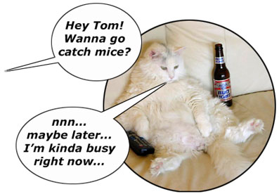
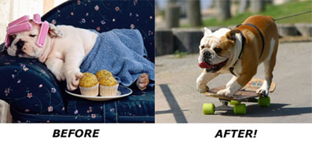
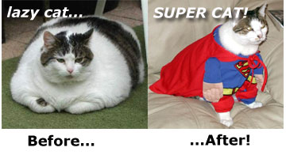

WilyWalnut.com
Meet the Genius in YOUR Brain!
GENIUS HOME - Reader's Questions : How to stop being lazy... Laziness Solutions:How To Overcome Laziness If you are suffering from the habit of being lazy, you might benefit from the advice I gave to Ashish on overcoming laziness... Ashish wrote... > Date: Thu, 2 Oct 2008
19:34:29 +0530 Here is my reply: Dear Ashish, It's like at school or work where maybe you have a deadline to finish a project by. It's in 2 weeks time, so you think, 'I've got plenty of time' and you goof off playing. But then suddenly you get to the night before the deadline and you suddenly realise how much work you have to do, and the shock wakes you out of your trance, and gets you working flat out to try and get it done in time. We lazy people have to create for ourselves the ability to think long term (because it doesn't come natural to us). We have to think about what we want, and realise that time is running out, and if we don't do it, we will never experience the things we want to achieve in life. See article: Fun and Games with
the Grim Reaper  3. Power of momentum Laziness is just a habit, and habits take consistent effort to change for at least 30 days. Just keep moving and focusing on doing one thing after another. It's like stoking a fire, you have to poke the embers to get the flame going again. Or you can think of it like an ox or a donkey where you have to keep slapping it to get it to go faster and faster until it goes from a walk, to a trot, to a canter, to a gallop. There is an old saying, 'A rolling stone gathers no moss.' You have to be like the stone and get rolling, and keep yourself rolling. Avoid the actions or activities that lead to you feeling lazy: don't go to bed late and then sleep in till late in the morning. Stay away from the foods that make you feel sluggish and lethargic afterwards. Avoid the people that bring you down to their level. Make choices that support and enhance your life rather than dragging it down. Surely that is the intelligent way to live. There is another saying, 'If you want something done, ask a busy man.' What that means is the busy man is in motion already, and he can quickly respond to your request and do the task quickly with little fuss. On the other hand the person who isn't busy and occupied makes a big deal out of simple tasks, and puts them off, or takes ages with them. Become busy, keep your energy flowing, stay in motion
through the day. The mind loves to be occupied, purposeful and
focused -- these give it great energy and a sense of
meaning.  5. Reframing situations Laziness is often quite selective. A man is lazing on a bench because he doesn't want to paint the wall but if a beautiful woman appears and asks for his help, he will jump up and help her (suddenly finding the energy!). What we have to do is find the thing(s) that we love to do, and see if there is anyway that we can do that as a career. And if we have a career that we do not care for, we have to try and reframe it so that we have more energy and enthusiasm for it. This just takes creative use of the mind to think in a different way about the work. Let's say that I want to be a computer programmer, but I have no skills yet and the only work I can get is digging ditches. It's filthy work and I hate it. I drag my feet on the way to work. I have no enthusiasm for the job. But it's what I'm doing so somehow I want to make the best of it. I can think how lucky I am to have a job at all. I can think about how the money I earn helps to feed and clothe me. I can think about how I am keeping healthier through all the exercise I get. I can think about how nice it is to be out in the fresh air. I can think about how this is giving me the income to afford to do computer classes at night. You get the idea. Changing your thoughts changes the way you perceive the
world. Positive thoughts give you more energy and enthusiasm,
causing you to do more and be more active. Related Articles Stop Procrastination: How to quit procrastinating Delayed Gratification -- 3 ways delaying gratification benefits you!
Wily Walnut is the headbrain at http://www.WilyWalnut.com , your top resource for unleashing the genius within, becoming infinitely creative, intelligent and brilliant in all that you do! GENIUS ARTICLES HOME IQ TESTS - CREATIVITY - GENIUS - BRAIN STORMING - SELF-HELP - BRAINTEASERS - WILY WALNUT
| ||
|


"Unleash Your Inner Genius For Creativity & Innovation!" Copyright 2001-2015 WilyWalnut.com SITE MAP